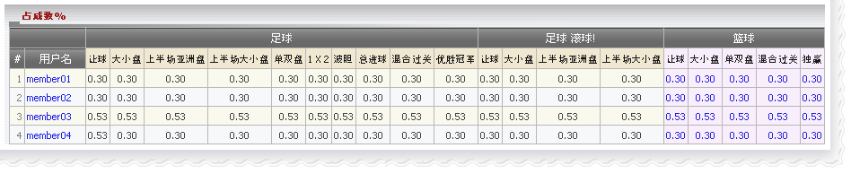

占成数%
定义:
代理占成为份额百分比决定代理在每张注单的输赢数额。

占成数
如何编辑占成数:
点击会员用户名已修改占成数。

编辑占成数
注:
- 代理占成 <= 上线设定的代理最高占成.
- 代理占成 >= 上线设定的代理最低占成.
- 代理可以为个别运动类型进行个别投注类型的设定或使用复制功能。
- 从 亚洲盘复 制适用于 大小盘, 上半场亚洲盘, 上半场大小盘, 单双
投注类别。
- 从 1x2复 制适用于 波胆, 总进球, 混合过关, 优胜冠军 投注类别。
- 滚球投注, 从 亚洲盘复 制适用于 大小盘, 上半场亚洲盘,上半场大小盘 投注类别。